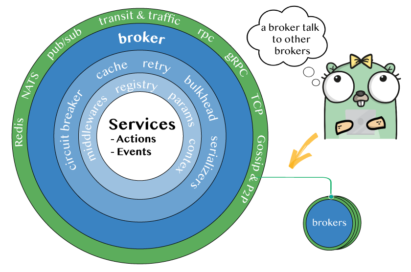

Broker
The Broker is the main component of Moleculer.
Is where you publish your services, calls actions, emits events and communicates with other brokers.

Create a broker
Broker lifecycle
import ( |
Create broker with custom settings:
import ( |
Create broker with transporter to communicate with remote nodes:
import ( |
Usage
package main |
Broker options
List of all available broker options:
| Name | Type | Default | Description |
|---|---|---|---|
Namespace |
string |
random string |
Namespace of nodes to segment your nodes on the same network. |
DiscoverNodeID |
func |
random string |
Unique node identifier. Must be unique in a namespace. |
LogLevel |
string |
info |
Log level for built-in logger (trace, debug, info, warn, error, fatal). |
LogFormat |
string |
TEXT |
Log formatter for built-in console logger. Values: TEXT, JSON |
Transporter |
string |
MEMORY |
Predefined transporter name. Read more. |
TransporterFactory |
func |
nil |
Transporter factory. You can create your own transporter or use new transporters |
MCallTimeout |
time.Duration |
5 secs |
Timeout period for multiple calls ctx.MCall(…) |
RetryPolicy |
struct |
Retry policy settings. Read more | |
MaxCallLevel |
int |
100 |
Limit of calling level. If it reaches the limit, broker will throw an MaxCallLevelError error. (Infinite loop protection) |
HeartbeatFrequency |
time.Duration |
15 secs |
Period to send heartbeat packet to other nodes. |
HeartbeatTimeout |
time.Duration |
30 secs |
Period to wait before setting node to unavailable status. |
OfflineCheckFrequency |
time.Duration |
20 secs |
Period to check for off-line nodes. |
NeighboursCheckTimeout |
time.Duration |
2 secs |
Period to wait for neighbours. Used during registry bootstrap and self-discovery. |
WaitForDependenciesTimeout |
time.Duration |
2 secs |
Period to wait for dependencies (other services) to be found. This value is used when starting a new service. |
Metrics |
Boolean |
false |
Enable metrics function. |
MetricsRate |
float32 |
1 |
Rate of metrics calls. 1 means to measure every request. 0.5 means to measure half of the requests. |
DisableInternalServices |
Boolean |
true |
Register internal services. |
DisableInternalMiddlewares |
Boolean |
true |
Register internal middlewares. |
DontWaitForNeighbours |
Boolean |
false |
Tell if the broker will wait for neighbours during start-up. |
WaitForNeighboursInterval |
time.Duration |
200 millisecs |
Period to wait for neighbours. |
Middlewares |
[]moleculer.Middlewares |
empty |
Register middlewares. |
Created |
func |
no op |
Fired when the broker is created. |
Started |
func |
no op |
Fired when the broker started. |
Stopped |
func |
no op |
Fired when the broker stopped. |

These options are not fully implemented and tested yet:
| Name | Type | Default | Description |
|---|---|---|---|
RequestTimeout |
time.Duration |
0 |
Period to wait before reject a request with a RequestTimeout error. Disabled: 0 |
Tracking |
struct |
Tracking requests and waiting for running requests before shutdowning. Read more | |
Registry |
Object |
Settings of Service Registry | |
circuitBreaker |
Object |
Settings of Circuit Breaker | |
bulkhead |
Object |
Settings of bulkhead | |
transit.maxQueueSize |
Number |
50000 |
A protection against inordinate memory usages when there are too many outgoing requests. If there are more than stated outgoing live requests, the new requests will be rejected with QueueIsFullError error. |
transit.disableReconnect |
Boolean |
false |
Disables the reconnection logic while starting a broker |
transit.packetLogFilter |
Array |
empty |
Filters out the packets in debug logs |
cacher |
String or Object or Cacher |
null |
Cacher settings. Read more |
serializer |
String or Serializer |
JSONSerializer |
Instance of serializer. Read more |
skipProcessEventRegistration |
Boolean |
false |
Skip the default graceful shutdown event handlers. In this case you have to register them manually. |
validation |
Boolean |
true |
Enable parameters validation. |
validator |
Validator |
null |
Custom Validator class for validation. |
Example Config
import ( |